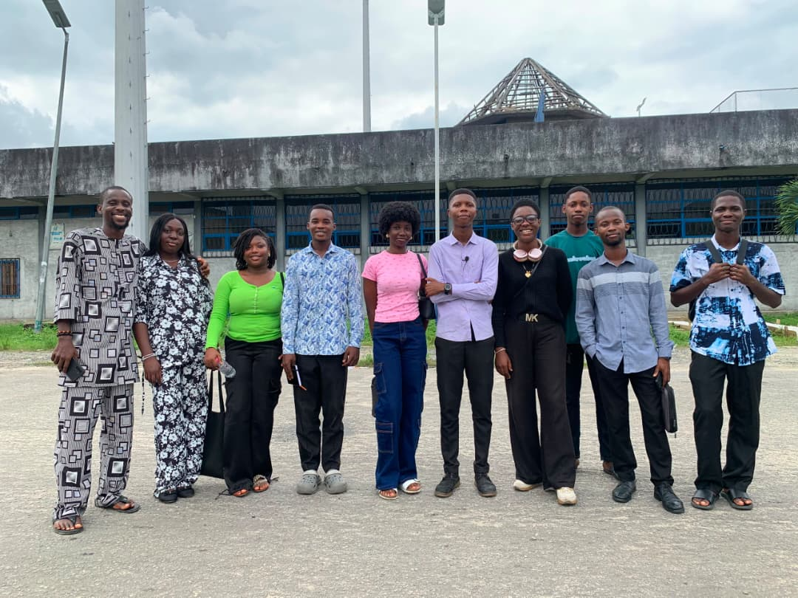

Beyond Your Peers is a movement dedicated to young people who refuse to settle. We believe that true growth happens when you take responsibility for your own path, think independently, and build meaningful relationships. Our mission is to foster a community where honesty and intentional growth are the foundation of every conversation.
Independent Thinkning
We believe in the power of questioning the status quo. By thinking for ourselves, we move beyond the noise of the average and build a foundation for meaningful, intentional growth.
Personal Responsibility
Being a peer means taking ownership of your choices and actions. We cultivate a community where accountability is a core value, fostering a culture of integrity and trust.
Honest Communication
True connection starts with transparency. We prioritize open, honest dialogue to build meaningful relationships and ensure that every conversation is a step toward deeper understanding.
It is for the individuals who are building meaningful relationships and intentional lives. We are a space for honest conversations about vision, direction, and the cost of being average. Whether you are navigating the complexities of decision-making or seeking clarity in uncertain seasons, BYP provides the support and the community to help you become someone who thinks for themselves. We are for the young people who are tired of the noise. Those who are ready to move beyond the average, seeking a community that values independent thinking and personal responsibility over social performance. BYP is for those who believe that true growth happens when you stop looking for permission and start taking ownership of your own path.
© 2026 Beyond Your Peers. All rights reserved.